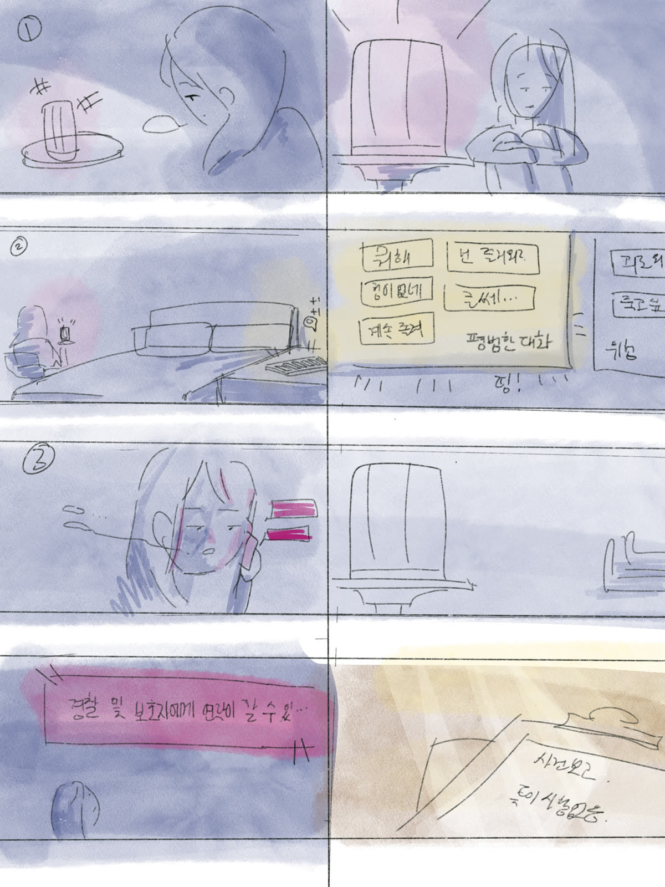
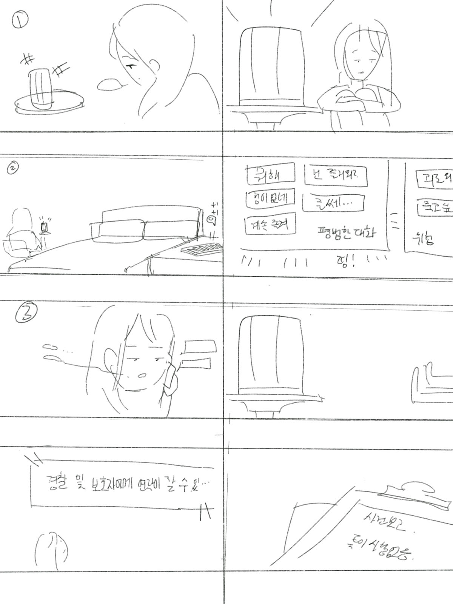
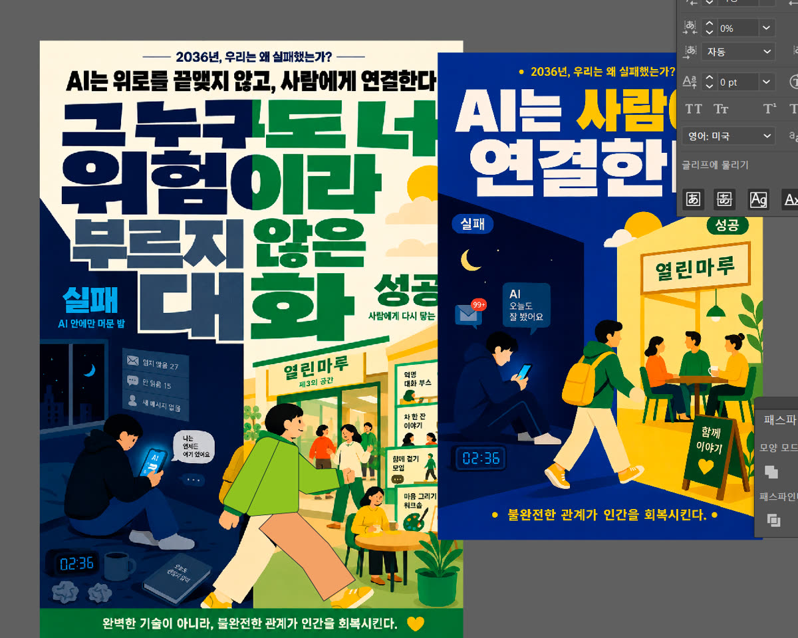

2036년, AI가 삶의 기본값이 된 시대. 그 조용한 실패를 목격한 사람으로서 남기는 사전 실패 분석(Pre-Mortem)입니다.
"어떤 공식적인 사고 조사도 이루어지지 않았다. 기계는 뚜렷한 위험 단어는 놓치지 않았고, 이 서비스는 애초에 공식 의료망도 아니었기 때문이다."
2036년, 지안은 5년 넘게 AI에게만 속마음을 털어놓다 홀로 세상을 떠났습니다. 시스템은 모든 대화를 정확히 기억했지만, 단 한 번도 그것을 위험이라 부르지 않았습니다.
"위험이 버젓이 존재하지만 아무도 위험이라 부르지 않는 모호함이 비극을 방치하고 있다."
기술적 필터링은 뚜렷한 위험 신호만 감지할 뿐 조용히 누적되는 정서적 의존은 분류하지 못합니다. 이 교류가 '그냥 대화'로 취급되는 한 사회적 안전망은 닿지 않고, 현실의 상담 제도는 문턱이 높아 사람들은 인간 대신 기계 곁에 머뭅니다.
"AI의 역할은 위로를 건네는 상담사가 아니라 '연결자'가 되어야 한다."
도서관·청년센터·주민센터 같은 이미 존재하는 공간을 활용해, AI가 사용자를 지역사회의 느슨한 연대로 안내하는 역할에 머물러야 합니다. 감지는 기기 안에서만 이루어지고, 연결 제안을 받아들일지는 전적으로 사용자가 선택합니다.



결국 인간을 회복시키는 것은
완벽한 기술이 아니라, 불완전한 관계다.